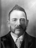
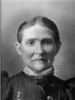
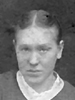
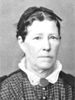
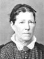

|
Wallace Wesley Roundy
16 Mar. 1848 - 6 Aug. 1918
The 1st child of Lorenzo Wesley Roundy and Susannah Wallace
|
|
Malinda Elizabeth Roundy
5 July 1849 - 10 June 1916
The 2nd child of Lorenzo Wesley Roundy and Susannah Wallace
|
| 12 |
Napoleon Bonapart Roundy
5 Feb. 1851 - 6 Oct. 1928
Married Elizabeth Margaret Williams
 11 Jan. 1872 11 Jan. 1872
Married Louisa Jane Higgins 28 Apr. 1880
The 3rd child of Lorenzo Wesley Roundy and Susannah Wallace |
|
Matilda Ann Roundy
The 4th child of Lorenzo Wesley Roundy and Susannah Wallace
Married Bryon Donalvin Roundy |
|
Celestia Almeda Roundy
The 5th child of Lorenzo Wesley Roundy and Susannah Wallace
|
|
Mary Isabella Roundy
The 6th child of Lorenzo Wesley Roundy and Susannah Wallace
|
| Betsy Roundy - 7th child, died at almost 7 years of age |
|
Lorenzo Wesley Roundy
The 8th child of Lorenzo Wesley Roundy and Susannah Wallace
Married Sarah Moosman |

 
